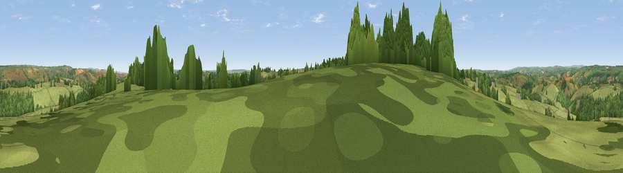

Viewpoint near Huntsham
#21693 in England · top 43% of its area beats it · near HuntshamWhere it is
The exact computed spot (SS 98325 20925). Click the marker for map links.
The view, rendered

A 360° render of this exact spot computed from the terrain model, tree cover and land cover — summer colours, afternoon light, calibrated against photographs of famous viewpoints. Real trees, hedges and buildings will differ in detail.
The panorama
Grey silhouette: terrain skyline in each direction (720 bearings, Earth curvature and refraction included). Dashed green: skyline with trees (+15 m) and buildings (+8 m) as obstacles. Blue strip: how far the ground is visible on each bearing.
Where the view opens
Wedge length = distance to the farthest visible ground on that bearing (vegetation-aware). Rings at 10, 25 and 50 km.
What fills the view
77% grassland · 19% woodland · 3% cropland
Angular shares of the visible panorama (visual magnitude), not map area. Landscape diversity 0.28 (0–1 Shannon).
Key numbers
More beautiful places nearby
The staircase of upgrades: each row has a higher view potential than everything closer. Driving times are estimates from straight-line distance, calibrated against real road routing — check an actual route before setting out.
| Place | Direction | Drive | Score |
|---|---|---|---|
| Viewpoint near Bampton | WSW · 1 km | ~3 min | 59.0 |
| Viewpoint near Huntsham | SSW · 2 km | ~6 min | 65.4 |
| Barton Hill | S · 5 km | ~10 min | 66.1 |
| Viewpoint near Chevithorne | SSW · 5 km | ~11 min | 66.2 |
| Heniton Hill | E · 5 km | ~12 min | 66.6 |
| Viewpoint near Skilgate | NNW · 8 km | ~16 min | 72.5 |
| Viewpoint near Wiveliscombe | ENE · 10 km | ~19 min | 75.1 |
| Viewpoint near Elworthy | NNE · 16 km | ~28 min | 75.6 |
50.97873, -3.44969 · source: screening · position refined by local search. Computed location — check access rights before visiting.